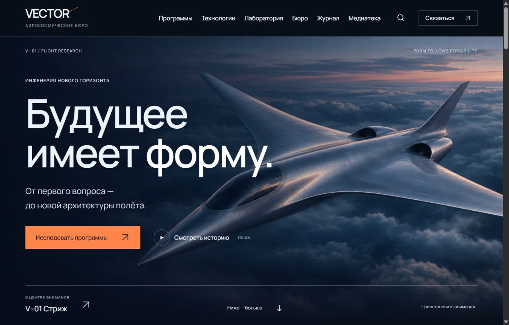
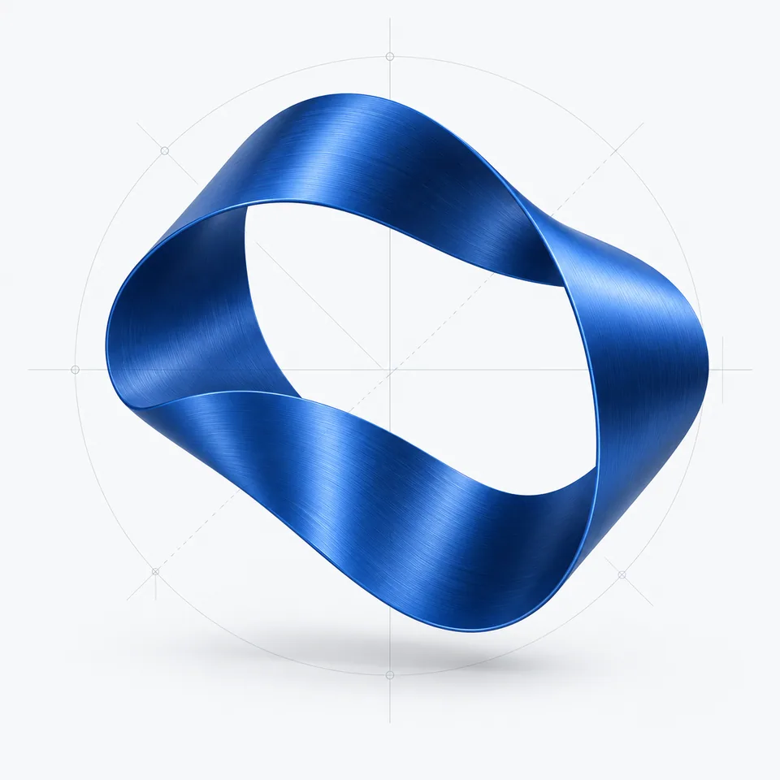
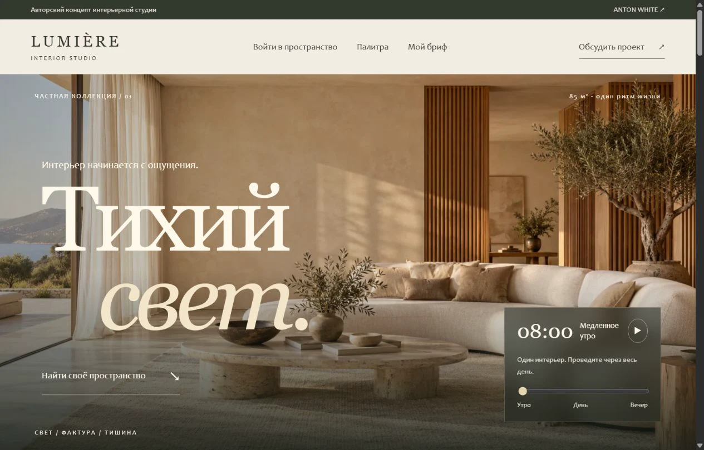
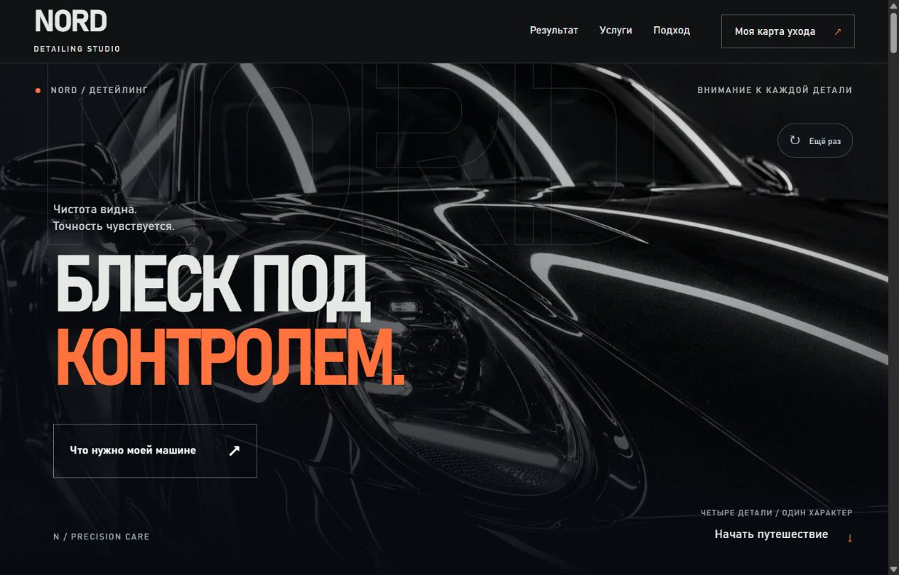
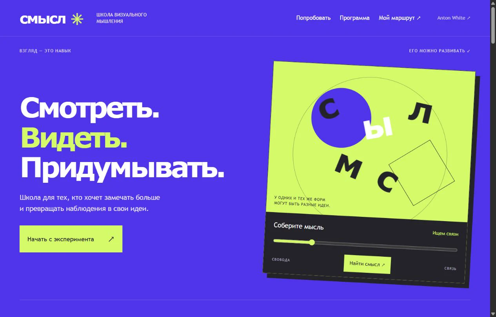
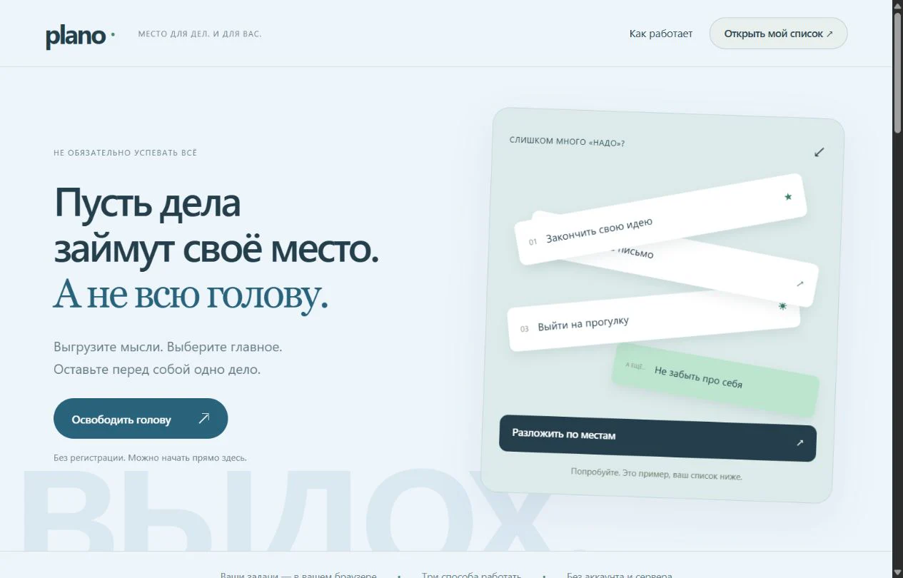

АЭРОКОСМИЧЕСКОЕ БЮРО / 17 СТРАНИЦ
Дизайн × инженерное мышление
Индивидуальные сайты для бизнеса и специалистов.
С ясной структурой, выразительным дизайном
и интерактивностью по делу.
Структура · дизайн · разработка

01 — ФОРМА СЛЕДУЕТ ЗА ИДЕЕЙОткройте и попробуйте. Здесь можно пройти по дому, сравнить уход за автомобилем, собрать композицию и исследовать полёт. Каждый проект отвечает на свою задачу.

АЭРОКОСМИЧЕСКОЕ БЮРО / 17 СТРАНИЦ

LUMIÈREИнтерьерная студияПомочь посетителю представить будущий дом и сформулировать пожелания.
Учебный проект: без реального заказчика и измеренных бизнес-результатов.

NORDДетейлингОбъяснить различия услуг и помочь выбрать уход под состояние автомобиля.
Учебный проект: без реального заказчика и измеренных бизнес-результатов.

СМЫСЛОбразованиеПоказать, чему можно научиться, и дать попробовать подход до знакомства с программой.
Учебный проект: без реального заказчика и измеренных бизнес-результатов.

PLANOЦифровой продуктОрганизовать дела в настоящем рабочем пространстве: список, доска и режим фокуса.
Учебный проект: без реального заказчика и измеренных бизнес-результатов.
Это авторские концепты, а не клиентские кейсы с обещаниями роста продаж. Они показывают то, что можно проверить самому: идею, дизайн и работающие взаимодействия.
От идеи до запуска
Текст, дизайн и разработка работают вместе.
Чтобы сайт выглядел вашим и помогал вашему делу.
Что вы предлагаете, кому это нужно и почему стоит выбрать вас. Из ответов складываются структура сайта и его тексты.
Структура и текстыШрифт, цвет, композиция и движение. Находим образ, который подходит вашему делу и запоминается посетителю.
Визуальный дизайнПревращаем идею в сайт. Настраиваем взаимодействия, проверяем удобство на телефоне и готовим страницу к запуску.
Разработка и запускФормат под вашу задачу
От короткого знакомства с вашим делом — до сайта, который хочется исследовать.
О вас, вашей услуге и способах связи. Компактная страница до трёх блоков с готовыми материалами.
Одна услуга или продукт: структура, индивидуальный дизайн и понятный путь к обращению. Базовый объём — до шести блоков.
Направления, услуги и информация о компании в единой системе. Стартовый объём — до пяти страниц без сложных интеграций.
Необычный сценарий, анимация или инструмент, который помогает понять ваш продукт. Состав определяем вместе.
Это стартовые цены за указанный объём. Итоговую стоимость, сроки и правки фиксируем до начала работы. Домен, хостинг и платные сервисы оплачиваются отдельно.
Рассчитать стоимость моего сайта ↗В каждом проекте: адаптивная вёрстка, проверка основных сценариев, базовые поисковые метатеги, исходные файлы и помощь с публикацией.
По задаче: тексты, визуальные материалы, дополнительные страницы, формы, интеграции и сопровождение. Всё включаем в оценку заранее.
Anton White / Обо мне
Я Антон Рылов, инженер-авиаконструктор. Создаю сайты под именем Anton White.
В авиации форма должна работать. В сайте — тоже: анимация помогает объяснить идею, текст отвечает на вопрос, кнопка ведёт к понятному действию. За визуальной свободой у меня всегда стоит порядок.
Чтобы посетитель быстро находил главное.
От типографики до удобства на телефоне.
Выразительный акцент в продуманной системе.
Обсуждаем задачу, примеры и бюджет. Выбираем формат и готовим предварительную оценку.
Фиксируем в договоре и ТЗ объём, цену, сроки и правки. Согласуем предоплату и визуальное направление.
Собираем сайт, показываем промежуточный результат. Проверяем ссылки, взаимодействия и мобильную версию.
После приёмки и окончательного расчёта передаём исходники и публикуем сайт. Дальнейшую поддержку обсуждаем отдельно.
Перед первым сообщением
Хороший проект начинается с ясных договорённостей.
Стартовые цены — в разделе «Стоимость». Точная оценка зависит от страниц, материалов и функций. Пришлите задачу и пример: до начала разработки согласуем фиксированную цену, срок и число правок. Изменения за пределами ТЗ оцениваем отдельно.
Да. Достаточно рассказать, чем вы занимаетесь, кому предлагаете продукт или услугу и что посетитель должен сделать на сайте. На этой основе подготовим структуру и тексты.
Конечно. Эффекты нужны, когда помогают показать продукт или объяснить сложное. Для небольшой услуги часто лучше лаконичная страница с ясным предложением и удобными контактами.
Согласованный адаптивный сайт и его исходные файлы. Отдельно обсудим домен, размещение и дальнейшие изменения. Серверные функции, оплата и CRM требуют отдельной оценки.
Следующий шаг — разговор
Расскажите, чем вы занимаетесь и какой сайт хотите. Добавьте пример, желаемый срок и примерный бюджет, если уже определились. Я предложу подходящий формат и оценю объём работ — готовое ТЗ не обязательно.
Telegram открывается по номеру. Если чат недоступен, можно написать СМС или позвонить.